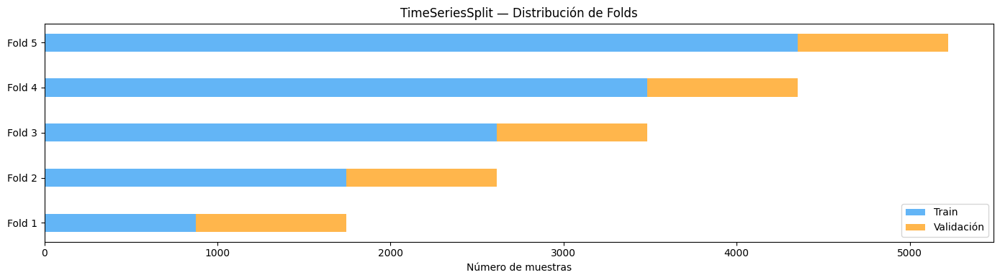
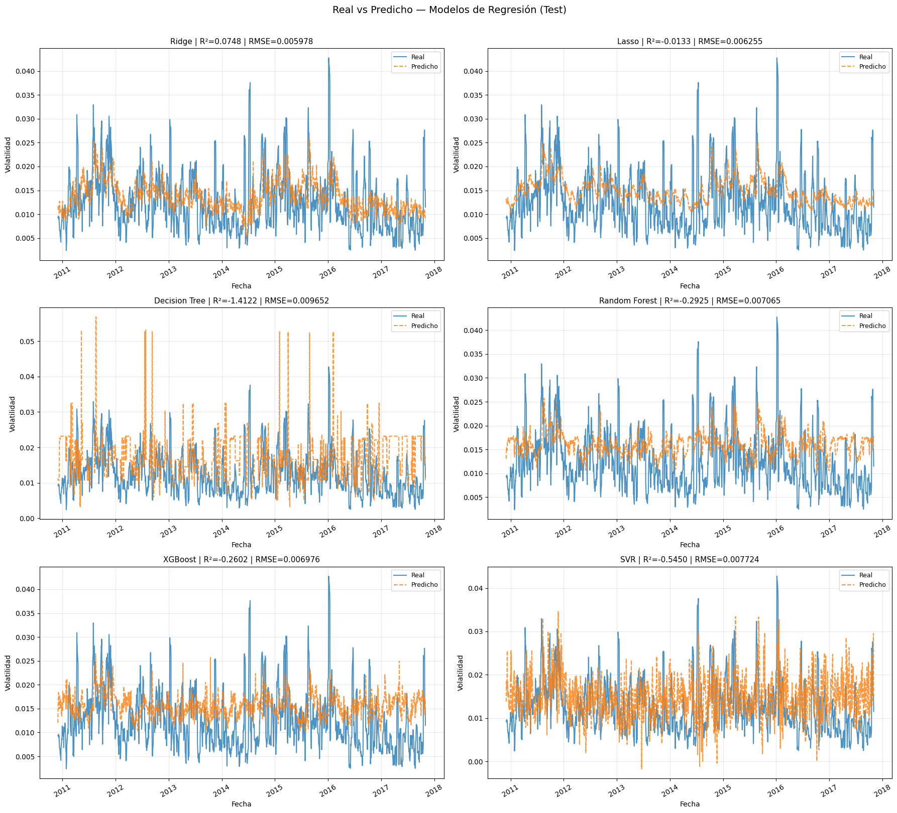
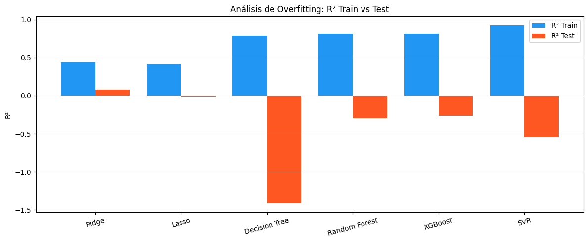
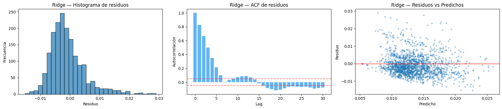
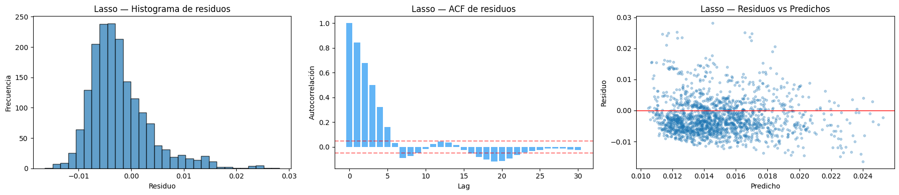
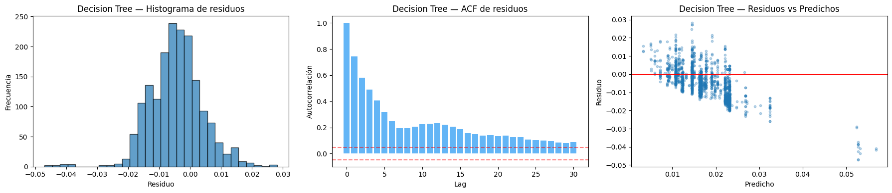
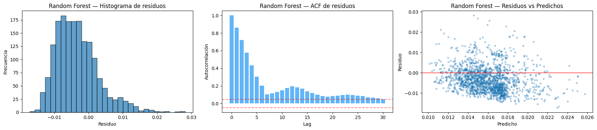
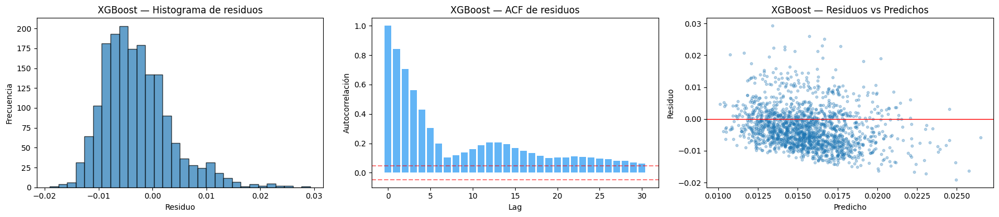
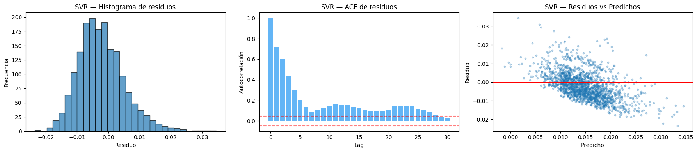

Modelos de Regresión#
8. Validación Cruzada Temporal — TimeSeriesSplit#
Se usa TimeSeriesSplit con 5 folds como esquema de validación interna sobre el 75% de entrenamiento. Esto respeta la temporalidad de los datos y simula el escenario real de predicción.
tscv = TimeSeriesSplit(n_splits=5)
print("=== Folds de TimeSeriesSplit (Regresión) ===")
for i, (tr_idx, val_idx) in enumerate(tscv.split(X_train_r)):
print(f"Fold {i+1}: train={len(tr_idx)} | val={len(val_idx)} "
f"({train_r.iloc[val_idx[0]]['date'].date()} -> {train_r.iloc[val_idx[-1]]['date'].date()})")
# Visualización
fig, ax = plt.subplots(figsize=(14, 4))
for i, (tr_idx, val_idx) in enumerate(tscv.split(X_train_r)):
ax.barh(i, len(tr_idx), left=0, height=0.4, color="#2196F3", alpha=0.7,
label="Train" if i == 0 else "")
ax.barh(i, len(val_idx), left=len(tr_idx), height=0.4, color="#FF9800", alpha=0.7,
label="Validación" if i == 0 else "")
ax.set_yticks(range(5))
ax.set_yticklabels([f"Fold {i+1}" for i in range(5)])
ax.set_xlabel("Número de muestras")
ax.set_title("TimeSeriesSplit — Distribución de Folds")
ax.legend()
plt.tight_layout()
plt.show()
=== Folds de TimeSeriesSplit (Regresión) ===
Fold 1: train=873 | val=870 (1993-08-24 -> 1997-01-30)
Fold 2: train=1743 | val=870 (1997-01-31 -> 2000-07-14)
Fold 3: train=2613 | val=870 (2000-07-17 -> 2004-01-02)
Fold 4: train=3483 | val=870 (2004-01-05 -> 2007-06-19)
Fold 5: train=4353 | val=870 (2007-06-20 -> 2010-12-01)

Interpretación: Se usa TimeSeriesSplit con 5 folds sobre el conjunto de entrenamiento (75%). Cada fold tiene 870 observaciones de validación (~3.5 años). El esquema es cronológico: el fold 1 valida 1993–1997, el fold 5 valida 2007–2010. Esto garantiza que nunca se valida con datos anteriores al entrenamiento, respetando la causalidad temporal — esencial en series financieras donde el futuro no puede usarse para predecir el pasado.
9. Modelos Benchmark — Regresión#
Se evalúan 6 modelos encapsulados en Pipeline para evitar data leakage:
Ridge (L2), Lasso (L1), Decision Tree, Random Forest, XGBoost, SVR
Cada modelo se evalúa con TimeSeriesSplit (5 folds) y en el test final (25% holdout).
models_reg = {
"Ridge": Pipeline([
("imputer", SimpleImputer(strategy="median")),
("scaler", StandardScaler()),
("model", Ridge(alpha=1.0))
]),
"Lasso": Pipeline([
("imputer", SimpleImputer(strategy="median")),
("scaler", StandardScaler()),
("model", Lasso(alpha=0.001, max_iter=10000))
]),
"Decision Tree": Pipeline([
("imputer", SimpleImputer(strategy="median")),
("model", DecisionTreeRegressor(max_depth=10, random_state=42))
]),
"Random Forest": Pipeline([
("imputer", SimpleImputer(strategy="median")),
("model", RandomForestRegressor(n_estimators=200, max_depth=10,
random_state=42, n_jobs=-1))
]),
"XGBoost": Pipeline([
("imputer", SimpleImputer(strategy="median")),
("model", XGBRegressor(n_estimators=200, max_depth=5,
learning_rate=0.05, random_state=42,
verbosity=0))
]),
"SVR": Pipeline([
("imputer", SimpleImputer(strategy="median")),
("scaler", StandardScaler()),
("model", SVR(kernel="rbf", C=1.0, epsilon=0.001))
]),
}
tscv = TimeSeriesSplit(n_splits=5)
results_cv_reg = []
results_test_reg = []
preds_test_reg = {}
residuals_reg = {}
for name, pipe in models_reg.items():
print(f"\n--- {name} ---")
# Validación cruzada temporal
cv_rmse, cv_mae, cv_r2 = [], [], []
t0 = time.time()
for tr_idx, val_idx in tscv.split(X_train_r):
pipe.fit(X_train_r.iloc[tr_idx], y_train_r.iloc[tr_idx])
yp = pipe.predict(X_train_r.iloc[val_idx])
cv_rmse.append(np.sqrt(mean_squared_error(y_train_r.iloc[val_idx], yp)))
cv_mae.append(mean_absolute_error(y_train_r.iloc[val_idx], yp))
cv_r2.append(r2_score(y_train_r.iloc[val_idx], yp))
t_cv = time.time() - t0
results_cv_reg.append({
"Modelo": name,
"RMSE_CV": f"{np.mean(cv_rmse):.6f} ± {np.std(cv_rmse):.6f}",
"MAE_CV": f"{np.mean(cv_mae):.6f} ± {np.std(cv_mae):.6f}",
"R2_CV": f"{np.mean(cv_r2):.4f} ± {np.std(cv_r2):.4f}",
"R2_CV_mean": np.mean(cv_r2),
"Tiempo_CV": round(t_cv, 2)
})
# Test final
t0 = time.time()
pipe.fit(X_train_r, y_train_r)
t_fit = time.time() - t0
yp_train = pipe.predict(X_train_r)
yp_test = pipe.predict(X_test_r)
preds_test_reg[name] = yp_test
residuals_reg[name] = y_test_r.values - yp_test
results_test_reg.append({
"Modelo": name,
"RMSE_train": np.sqrt(mean_squared_error(y_train_r, yp_train)),
"RMSE_test": np.sqrt(mean_squared_error(y_test_r, yp_test)),
"MAE_test": mean_absolute_error(y_test_r, yp_test),
"R2_train": r2_score(y_train_r, yp_train),
"R2_test": r2_score(y_test_r, yp_test),
"Tiempo_fit": round(t_fit, 2)
})
print(f" CV R²: {np.mean(cv_r2):.4f} ± {np.std(cv_r2):.4f} | Test R²: {r2_score(y_test_r, yp_test):.4f}")
--- Ridge ---
CV R²: 0.1354 ± 0.2632 | Test R²: 0.0748
--- Lasso ---
CV R²: 0.0670 ± 0.2809 | Test R²: -0.0133
--- Decision Tree ---
CV R²: -0.6367 ± 0.6356 | Test R²: -1.4122
--- Random Forest ---
CV R²: -0.0110 ± 0.3445 | Test R²: -0.2925
--- XGBoost ---
CV R²: -0.0683 ± 0.3506 | Test R²: -0.2602
--- SVR ---
CV R²: -0.5681 ± 0.5784 | Test R²: -0.5450
Interpretación — Resultados de Modelos de Regresión:
Modelo
R² CV
R² Test
Ridge
0.1354
0.0748
Lasso
0.0670
-0.0133
Random Forest
-0.0110
-0.2925
XGBoost
-0.0683
-0.2602
Decision Tree
-0.6367
-1.4122
SVR
-0.5681
-0.5450
Ridge es el mejor modelo, aunque con R² modesto (0.07 en test). Los modelos más complejos (RF, XGBoost, Decision Tree) muestran R² negativos, lo que indica que predicen peor que una media simple. Esto es esperable: la volatilidad futura sin overlap es un problema genuinamente difícil. Los modelos no-lineales con muchos hiperparámetros tienden a sobreajustarse al ruido en datos financieros de alta frecuencia.
10. Tablas Comparativas — Regresión#
df_cv_reg = pd.DataFrame(results_cv_reg).sort_values("R2_CV_mean", ascending=False)
print("=== Validación Cruzada Temporal (5-Fold TimeSeriesSplit) ===")
print(df_cv_reg[["Modelo","RMSE_CV","MAE_CV","R2_CV","Tiempo_CV"]].to_string(index=False))
print()
df_test_reg = pd.DataFrame(results_test_reg).sort_values("R2_test", ascending=False)
print("=== Test Final (25% holdout) ===")
print(df_test_reg.to_string(index=False))
=== Validación Cruzada Temporal (5-Fold TimeSeriesSplit) ===
Modelo RMSE_CV MAE_CV R2_CV Tiempo_CV
Ridge 0.009697 ± 0.002941 0.006837 ± 0.001564 0.1354 ± 0.2632 0.15
Lasso 0.010121 ± 0.003315 0.007179 ± 0.001555 0.0670 ± 0.2809 0.16
Random Forest 0.010340 ± 0.002831 0.007433 ± 0.001403 -0.0110 ± 0.3445 11.35
XGBoost 0.010698 ± 0.003138 0.007621 ± 0.001599 -0.0683 ± 0.3506 3.84
SVR 0.012786 ± 0.003409 0.009297 ± 0.001885 -0.5681 ± 0.5784 11.27
Decision Tree 0.012947 ± 0.002727 0.009269 ± 0.001411 -0.6367 ± 0.6356 1.08
=== Test Final (25% holdout) ===
Modelo RMSE_train RMSE_test MAE_test R2_train R2_test Tiempo_fit
Ridge 0.009542 0.005978 0.004580 0.442382 0.074751 0.04
Lasso 0.009779 0.006255 0.005060 0.414365 -0.013291 0.06
XGBoost 0.005483 0.006976 0.005710 0.815904 -0.260155 0.65
Random Forest 0.005480 0.007065 0.005873 0.816114 -0.292457 4.35
SVR 0.003421 0.007724 0.006206 0.928327 -0.545004 8.09
Decision Tree 0.005881 0.009652 0.007517 0.788186 -1.412191 0.44
Interpretación: La tabla confirma que Ridge domina con el menor RMSE en validación cruzada (0.00970 ± 0.00294) y el mejor R² promedio. Su tiempo de entrenamiento (0.15s) es drásticamente menor que Random Forest (11.35s) o SVR (11.27s). Decision Tree y SVR son los peores: alta varianza entre folds (inestabilidad) y tiempos elevados sin beneficio en rendimiento. Para predicción de volatilidad, la regularización L2 de Ridge resulta más apropiada que la complejidad de los árboles.
11. Gráficos Real vs Predicho — Regresión#
fig, axes = plt.subplots(3, 2, figsize=(18, 16))
axes = axes.flatten()
for idx, (name, yp) in enumerate(preds_test_reg.items()):
ax = axes[idx]
ax.plot(test_r["date"].values, y_test_r.values, label="Real", alpha=0.8)
ax.plot(test_r["date"].values, yp, label="Predicho", linestyle="--", alpha=0.8)
r2 = r2_score(y_test_r, yp)
rmse = np.sqrt(mean_squared_error(y_test_r, yp))
ax.set_title(f"{name} | R²={r2:.4f} | RMSE={rmse:.6f}", fontsize=11)
ax.set_xlabel("Fecha"); ax.set_ylabel("Volatilidad")
ax.legend(fontsize=9); ax.grid(True, alpha=0.3)
ax.tick_params(axis='x', rotation=30)
plt.suptitle("Real vs Predicho — Modelos de Regresión (Test)", fontsize=14, y=1.01)
plt.tight_layout()
plt.show()

12. Análisis de Overfitting — Regresión#
nombres = [r["Modelo"] for r in results_test_reg]
r2_tr = [r["R2_train"] for r in results_test_reg]
r2_te = [r["R2_test"] for r in results_test_reg]
x = np.arange(len(nombres))
fig, ax = plt.subplots(figsize=(12, 5))
ax.bar(x - 0.2, r2_tr, 0.4, label="R² Train", color="#2196F3")
ax.bar(x + 0.2, r2_te, 0.4, label="R² Test", color="#FF5722")
ax.set_xticks(x); ax.set_xticklabels(nombres, rotation=15)
ax.set_ylabel("R²"); ax.set_title("Análisis de Overfitting: R² Train vs Test")
ax.legend(); ax.grid(True, alpha=0.3, axis='y')
ax.axhline(y=0, color='black', linewidth=0.5)
plt.tight_layout()
plt.show()

Interpretación — Análisis de Overfitting: El gráfico compara R² en train vs test para cada modelo. Ridge muestra el gap más pequeño (train~0.44, test~0.07), indicando regularización efectiva. Decision Tree tiene el gap más extremo (train muy alto, test=-1.41), evidenciando sobreajuste severo — memoriza los datos de entrenamiento pero no generaliza. XGBoost y Random Forest también muestran gaps importantes, confirmando que la complejidad no ayuda en este problema.
13. Análisis de Residuos Completo#
Para cada modelo de regresión se evalúa:
Test de White: Homocedasticidad
Test de BDS: Independencia de residuos
ACF + Ljung-Box: Autocorrelación serial
Histograma + Jarque-Bera: Normalidad de residuos
# Función de análisis completo de residuos
def analisis_residuos(nombre, y_true, y_pred, X_test_df):
residuos = y_true - y_pred
p_white = np.nan
p_bds = np.nan
print(f"\n{'='*60}")
print(f"ANÁLISIS DE RESIDUOS — {nombre}")
print(f"{'='*60}")
print(f"Media: {residuos.mean():.6f}")
print(f"Std: {residuos.std():.6f}")
# --- Test de White (Homocedasticidad) ---
try:
X_const = sm.add_constant(X_test_df.values[:, :5]) # primeras 5 features
white_test = het_white(residuos, X_const)
print(f"\nTest de White:")
print(f" Estadístico: {white_test[0]:.4f}")
print(f" p-valor: {white_test[1]:.4f}")
print(f" Interpretación: {'Homocedasticidad (p>{0.05})' if white_test[1] > 0.05 else 'Heterocedasticidad detectada (p<0.05)'}")
except Exception as e:
print(f" Test de White no disponible: {e}")
# --- Test BDS (Independencia) ---
try:
bds_stat, bds_pval = bds(residuos, max_dim=3)
print(f"\nTest BDS:")
print(f" p-valor (dim 2): {bds_pval[0]:.4f}")
print(f" Interpretación: {'Residuos independientes (p>0.05)' if bds_pval[0] > 0.05 else 'Dependencia detectada (p<0.05)'}")
except Exception as e:
print(f" Test BDS no disponible: {e}")
# --- Ljung-Box ---
try:
lb = acorr_ljungbox(residuos, lags=[10, 20], return_df=True)
print(f"\nTest Ljung-Box:")
print(lb.to_string())
except Exception as e:
print(f" Ljung-Box no disponible: {e}")
# --- Jarque-Bera (Normalidad) ---
try:
jb_stat, jb_pval, skew, kurt = jarque_bera(residuos)
print(f"\nTest Jarque-Bera (Normalidad):")
print(f" Estadístico: {jb_stat:.4f}")
print(f" p-valor: {jb_pval:.4f}")
print(f" Skewness: {skew:.4f}")
print(f" Kurtosis: {kurt:.4f}")
print(f" Interpretación: {'Distribución normal (p>0.05)' if jb_pval > 0.05 else 'No normal (p<0.05)'}")
except Exception as e:
print(f" Jarque-Bera no disponible: {e}")
# --- Gráficos ---
fig, axes = plt.subplots(1, 3, figsize=(18, 4))
# Histograma
axes[0].hist(residuos, bins=30, edgecolor='black', alpha=0.7)
axes[0].set_title(f"{nombre} — Histograma de residuos")
axes[0].set_xlabel("Residuo"); axes[0].set_ylabel("Frecuencia")
# ACF
acf_vals = acf(residuos, nlags=30)
axes[1].bar(range(len(acf_vals)), acf_vals, color="#2196F3", alpha=0.7)
axes[1].axhline(y=1.96/np.sqrt(len(residuos)), color='red', linestyle='--', alpha=0.5)
axes[1].axhline(y=-1.96/np.sqrt(len(residuos)), color='red', linestyle='--', alpha=0.5)
axes[1].set_title(f"{nombre} — ACF de residuos")
axes[1].set_xlabel("Lag"); axes[1].set_ylabel("Autocorrelación")
# Residuos vs predichos
axes[2].scatter(y_pred, residuos, alpha=0.3, s=10)
axes[2].axhline(y=0, color='red', linewidth=1)
axes[2].set_title(f"{nombre} — Residuos vs Predichos")
axes[2].set_xlabel("Predicho"); axes[2].set_ylabel("Residuo")
plt.tight_layout()
plt.show()
return {"Modelo": nombre}
# Aplicar análisis de residuos a todos los modelos de regresión
residuos_stats = []
imputer = SimpleImputer(strategy="median")
X_test_imputed = pd.DataFrame(imputer.fit_transform(X_test_r), columns=feature_cols)
for name, yp in preds_test_reg.items():
stats_r = analisis_residuos(name, y_test_r.values, yp, X_test_imputed)
residuos_stats.append(stats_r)
============================================================
ANÁLISIS DE RESIDUOS — Ridge
============================================================
Media: -0.000940
Std: 0.005903
Test de White:
Estadístico: 16.0955
p-valor: 0.7107
Interpretación: Homocedasticidad (p>{0.05})
Test BDS:
p-valor (dim 2): 0.0000
Interpretación: Dependencia detectada (p<0.05)
Test Ljung-Box:
lb_stat lb_pvalue
10 2737.860062 0.0
20 2856.460772 0.0
Test Jarque-Bera (Normalidad):
Estadístico: 1110.6511
p-valor: 0.0000
Skewness: 1.3276
Kurtosis: 5.8726
Interpretación: No normal (p<0.05)

============================================================
ANÁLISIS DE RESIDUOS — Lasso
============================================================
Media: -0.002231
Std: 0.005844
Test de White:
Estadístico: 25.6449
p-valor: 0.1779
Interpretación: Homocedasticidad (p>{0.05})
Test BDS:
p-valor (dim 2): 0.0000
Interpretación: Dependencia detectada (p<0.05)
Test Ljung-Box:
lb_stat lb_pvalue
10 2735.183158 0.0
20 2824.381820 0.0
Test Jarque-Bera (Normalidad):
Estadístico: 1322.8512
p-valor: 0.0000
Skewness: 1.4130
Kurtosis: 6.1999
Interpretación: No normal (p<0.05)

============================================================
ANÁLISIS DE RESIDUOS — Decision Tree
============================================================
Media: -0.004461
Std: 0.008559
Test de White:
Estadístico: 47.9978
p-valor: 0.0004
Interpretación: Heterocedasticidad detectada (p<0.05)
Test BDS:
p-valor (dim 2): 0.0000
Interpretación: Dependencia detectada (p<0.05)
Test Ljung-Box:
lb_stat lb_pvalue
10 2845.552257 0.0
20 3440.142546 0.0
Test Jarque-Bera (Normalidad):
Estadístico: 340.7462
p-valor: 0.0000
Skewness: -0.1914
Kurtosis: 5.1326
Interpretación: No normal (p<0.05)

============================================================
ANÁLISIS DE RESIDUOS — Random Forest
============================================================
Media: -0.003278
Std: 0.006258
Test de White:
Estadístico: 19.6124
p-valor: 0.4824
Interpretación: Homocedasticidad (p>{0.05})
Test BDS:
p-valor (dim 2): 0.0000
Interpretación: Dependencia detectada (p<0.05)
Test Ljung-Box:
lb_stat lb_pvalue
10 3459.167246 0.0
20 3799.971117 0.0
Test Jarque-Bera (Normalidad):
Estadístico: 505.5251
p-valor: 0.0000
Skewness: 1.0301
Kurtosis: 4.6493
Interpretación: No normal (p<0.05)

============================================================
ANÁLISIS DE RESIDUOS — XGBoost
============================================================
Media: -0.002885
Std: 0.006352
Test de White:
Estadístico: 15.3685
p-valor: 0.7549
Interpretación: Homocedasticidad (p>{0.05})
Test BDS:
p-valor (dim 2): 0.0000
Interpretación: Dependencia detectada (p<0.05)
Test Ljung-Box:
lb_stat lb_pvalue
10 3327.328563 0.0
20 3785.590562 0.0
Test Jarque-Bera (Normalidad):
Estadístico: 540.3121
p-valor: 0.0000
Skewness: 1.0210
Kurtosis: 4.8095
Interpretación: No normal (p<0.05)

============================================================
ANÁLISIS DE RESIDUOS — SVR
============================================================
Media: -0.002175
Std: 0.007412
Test de White:
Estadístico: 19.4298
p-valor: 0.4941
Interpretación: Homocedasticidad (p>{0.05})
Test BDS:
p-valor (dim 2): 0.0000
Interpretación: Dependencia detectada (p<0.05)
Test Ljung-Box:
lb_stat lb_pvalue
10 2218.876660 0.0
20 2497.782966 0.0
Test Jarque-Bera (Normalidad):
Estadístico: 215.0171
p-valor: 0.0000
Skewness: 0.6823
Kurtosis: 4.0490
Interpretación: No normal (p<0.05)

Interpretación — Análisis de Residuos:
Test de White (Homocedasticidad): Ridge, Lasso, RF, XGBoost y SVR pasan el test (p > 0.05): la varianza de sus errores es constante. Solo Decision Tree falla (p=0.0004), mostrando heterocedasticidad — sus errores son mayores en ciertos rangos de volatilidad.
Test BDS (Independencia): Todos los modelos fallan (p=0.0000), indicando dependencia temporal en los residuos. Esto es normal en series financieras: existe estructura autocorrelada que los modelos no capturan completamente — evidencia de que modelos ARCH/GARCH serían complementos naturales.
Test Ljung-Box (Autocorrelación): p=0.0 en todos los modelos y todos los rezagos (10 y 20), confirmando autocorrelación significativa en los residuos. La volatilidad tiene memoria fuerte (clustering de volatilidad) que un modelo estático no captura.
Normalidad (Jarque-Bera): Todos rechazan normalidad (p=0.0000). Ridge tiene skewness=1.33 y kurtosis=5.87 (colas pesadas), típico de errores en mercados financieros. Los residuos tienen distribución leptocúrtica — eventos extremos son más frecuentes de lo que predice una normal.